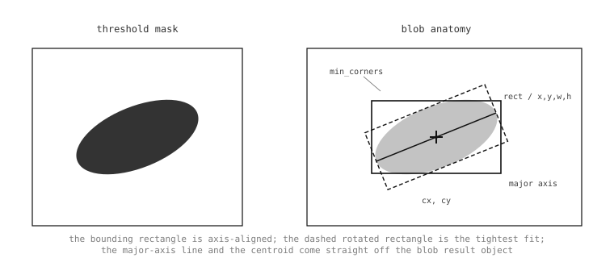

5.25. Finding blobs¶
Thresholding turned the captured frame into a binary mask: every pixel either passes the threshold test or it doesn’t. That answers which colours the application cares about appear in the scene, but not where – the mask is just a sea of 1s and 0s. The next step is blob detection: walking the mask, finding contiguous regions of passing pixels, and returning each one as an object with a position, a size, an orientation, and the other properties an application can act on.
find_blobs() is the
work-horse method for that step, and it is the
most common entry point into the image module’s
result-object world. Tracking a coloured ball,
following a line painted on the floor,
counting how many bright spots a thermal sensor
sees, deciding whether a blue LED is on or off
– the same call covers all of them. The
inputs change (the thresholds, the region
searched, the filters applied to the result),
but the call pattern is the same.
5.25.1. The basic call¶
find_blobs takes a list of thresholds and
returns a list of blob result objects:
thresholds = [(30, 100, 15, 127, 15, 127)] # LAB threshold for red
blobs = img.find_blobs(thresholds)
for b in blobs:
img.draw_rectangle(b.rect, color=(255, 0, 0))
img.draw_cross(b.cx, b.cy, color=(255, 0, 0))
Each threshold tuple has the same form as the
thresholds passed to
binary() – six entries
(l_lo, l_hi, a_lo, a_hi, b_lo, b_hi) for an
RGB565 image (the bounds are in LAB), two
entries (lo, hi) for a grayscale image. Up
to 32 thresholds can be supplied in a single
call, which is what makes
find_blobs() so flexible:
red, green, and blue beacons can be tracked
simultaneously, each contributing its own
blobs to the returned list, and each blob’s
code property identifies which threshold
it matched.
The draw_rectangle() and
draw_cross() calls above
annotate the captured frame for the IDE
preview. The blob result already carries
b.rect (the bounding box as a 4-tuple) and
b.cx / b.cy (the integer centroid), so
drawing the detection back into the frame is
two method calls.
5.25.2. What the result contains¶
Each Blob is an
attribute-tuple that packs together everything
the detector measured about the region. The
properties divide into four groups.
The bounding-box and centroid group –
x, y, w, h, rect, cx,
cy, cxf, cyf – describes the
position of the blob. rect is the
(x, y, w, h) 4-tuple that drawing methods
expect; cx and cy are the centroid in
integer pixel coordinates; cxf and cyf
are the centroid in sub-pixel float
coordinates, useful when an upstream
calibration cares about fractional positions.
The form descriptors – pixels, area,
density, perimeter, roundness,
elongation, compactness, rotation
– describe what the blob looks like.
pixels is the count of passing pixels;
area is the area of the axis-aligned
bounding box (w * h); density is the
ratio of the two, which approaches 1.0 for
a solid rectangle and drops toward 0.0 for
a thin diagonal stroke. roundness and
compactness both score how round the blob
is, from different geometric viewpoints
(roundness from the second-order moments,
compactness from the perimeter-to-area
ratio); elongation is 1.0 - roundness
for convenience. rotation is the
orientation of the major axis in radians,
which is most accurate on elongated blobs and
becomes noisy on nearly-round ones (an
ambiguous axis has no well-defined
direction).
The threshold and merge metadata – code,
count – identify which threshold matched
and how many source blobs were merged into the
returned one. code is a 32-bit bitmap with
one bit set per matching threshold (single
threshold gives code == 1; a merged
multi-colour blob can have several bits set);
count is 1 unless merge=True
combined several detections into one.
The corners group – corners,
min_corners – give the rotated geometry
of the blob. corners is the 4-tuple of
(x, y) extremes pulled from the blob’s
contour, sorted clockwise from the top-left;
min_corners is the 4-tuple of corners for
the minimum-area rotated rectangle that
encloses the blob. The min-area rectangle is
the tight fit; the axis-aligned rect is
the loose fit aligned with the pixel grid.
Both are useful depending on whether a
downstream stage needs an oriented box or a
plain one.

A blob carries the axis-aligned bounding
box (rect, x, y, w, h),
the centroid (cx, cy or sub-pixel
cxf, cyf), the minimum-area rotated
rectangle (min_corners plus
rotation), and the optional major /
minor axis lines computed by the
module-level helpers below.¶
5.25.3. Filtering the search¶
A captured frame typically contains pixels
that match the threshold for reasons other
than the object the application cares about:
specular highlights, distant background
objects, image-noise pixels that happen to
fall in the LAB range. The keyword arguments
to find_blobs() are the
first line of defence.
roi restricts the search to a region of
the frame, the way every other image-module
method does. An application that knows the
object can only appear in the lower half of
the field of view passes
roi=(0, h//2, w, h//2) and ignores
everything above; the saved time goes back
into frame rate.
area_threshold and pixels_threshold
both filter blobs that are too small to care
about. area_threshold drops blobs whose
bounding box has fewer than that many pixels
of area (good for filtering scattered noise);
pixels_threshold drops blobs that have
fewer than that many passing pixels (good
for filtering blobs that are large but sparse,
like a thresholded stippling pattern with one
or two pixels matching here and there). Both
defaults are 10; cranking them up to
hundreds for a foreground target a few
centimetres across throws away every speck of
small noise.
x_stride and y_stride set the pixel
step the scanner takes while looking for a
blob to start tracing. Stride is not the
trace resolution – the trace always follows
the actual blob boundary at single-pixel
detail – but it controls how quickly the
scan finds a starting pixel. When blobs are
known to be large (a fist-sized coloured
target a foot from the cam, easily a hundred
pixels across), x_stride=4, y_stride=4
cuts the scan time by sixteen with no
practical loss in detection. When blobs are
small (a distant LED beacon, a few pixels
across), the strides have to stay at 1 to
avoid stepping over them entirely. invert
flips the threshold test: matching becomes
not-matching and the routine returns blobs
of failing pixels instead.
threshold_cb is a Python callback invoked
on each blob after thresholding but before
the final result list is built. The callback
receives the blob and returns True to
keep it or False to drop it. This is the
place to apply arbitrary Python-level filters
on properties the keyword arguments don’t
expose directly – a minimum density, a
specific rotation range, a custom code-bit
combination after merging. The keyword
arguments are filters in native code and run
fast; the callback runs in Python and is
slower but unlimited in what it can express.
5.25.4. Merging overlapping blobs¶
merge=True post-processes the result list
to combine blobs whose bounding rectangles
overlap. The natural use is detecting a
target whose colour the camera sees as
multiple thresholded regions because of
specular highlights, shadow lines, or
mismatched lighting across the object: a
single red ball might come back as three or
four small red blobs that, taken together,
trace the ball. With merge=True, the
three blobs become one large blob, the
rect covers the union, the code is
the bitwise OR of the merged blobs’ codes
(so a multi-colour merge identifies which
colours contributed), and count reports
how many source blobs were combined.
margin grows or shrinks the bounding
rectangles before the overlap test. With
margin=2, blobs whose bounding rectangles
come within 2 pixels of each other still
merge; with margin=-2, only blobs whose
bounding rectangles overlap by at least 2
pixels merge. The natural tuning: positive
margin to handle blobs that the threshold
broke into adjacent pieces; negative margin
to keep tightly-grouped distinct objects
separate.
merge_cb runs on each candidate pair
before the merge happens. The callback
receives the two blobs and returns True
to allow the merge or False to prevent
it. This is the right tool for cross-checking
merges that the geometric rule misses – for
instance, refusing to merge two blobs whose
rotation angles disagree by more than a
threshold, or refusing to merge a small blob
into a much larger one if the small one is
just speckle.
5.25.5. Projection histograms¶
x_hist_bins_max and y_hist_bins_max
attach optional projection histograms to
each blob. A projection histogram is the
count of passing pixels along one axis: the
X-axis histogram totals passing pixels per
column inside the blob’s bounding box, and
the Y-axis histogram totals per row. Both
default to zero – the histograms are not
computed unless a non-zero max is
supplied, since they would otherwise add
work to every detection.
When they are computed, the histograms
provide a cheap 1-D signal that an
application can run further analysis on:
detecting the position of a vertical stripe
inside the blob, finding the breakpoint of a
two-coloured target, counting how many gaps
appear along the long axis. They are
populated as the x_hist_bins and
y_hist_bins properties on each
Blob.
5.25.6. Extra geometric helpers¶
A handful of further geometric measures live as module-level functions that take a blob and return the requested measurement:
image.get_solidity()returns the blob’s solidity – pixels divided by the area of the convex hull. A solid filled region is close to1.0; a blob with concavities (a horseshoe, a hand with fingers spread) drops well below.image.get_convexity()returns the convexity – the convex-hull perimeter divided by the blob’s perimeter. A perfectly convex blob is1.0; jagged or notched blobs are lower.image.get_major_axis_line()andimage.get_minor_axis_line()returnLineobjects along the major and minor axes of the blob, derived from the rotated minimum-area rectangle.image.get_enclosing_circle()returns aCirclethat encloses the blob – useful when a downstream stage wants a circle to draw or test against.image.get_enclosed_ellipse()returns the 5-tuple(cx, cy, rx, ry, rotation)for an ellipse inscribed in the blob’s minimum-area rectangle. The values feed directly intodraw_ellipse().
5.25.7. Auto-learning a threshold¶
A blob detector is only as good as the thresholds it is run with, and the work of finding the right threshold for a target colour is its own problem. Two common patterns reduce that work.
The first is interactive selection in the
IDE: capture a frame, drag a rectangle
around an example of the target colour, and
let the IDE’s threshold editor
report the LAB bounds it sees. Those bounds
drop into the script as the
find_blobs() thresholds
and the detector is ready.
The second is programmatic auto-learn: a
calibration routine running on the camera
captures a frame, takes a histogram of a
known patch where the target is
(get_histogram() with
roi=), and reads the patch’s value range
off the histogram with
get_percentile(). The
5th percentile sets each channel’s low bound
and the 95th its high bound, ignoring stray
outlier pixels at both ends. On an RGB565
image one percentile call reports all three
LAB channels at once, so the two calls
produce the six numbers
find_blobs() expects:
h = img.get_histogram(roi=patch)
lo = h.get_percentile(0.05)
hi = h.get_percentile(0.95)
threshold = (lo.l_value, hi.l_value,
lo.a_value, hi.a_value,
lo.b_value, hi.b_value)